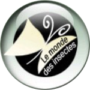

Philodromidae
espèces, genitalias mâle , genitalias femelle
Philodromus
12 espèces en Île-de-France dont 2 identifiables à vue
Philodromus albidus (non identifiable à vue) LC

Philodromus aureolus (non identifiable à vue) LC


Philodromus buxi (non identifiable à vue) LC


Philodromus cespitum (non identifiable à vue) LC


Philodromus dispar (difficulté 1) LC
Confusions possibles :
Philodromus spp.
Philodromus spp.


Philodromus emarginatus (non identifiable à vue) LC

Philodromus longipalpis (non identifiable à vue) LC

Philodromus margaritatus (difficulté 1) LC
Condition :
morphe “fantome” uniquement
morphe “fantome” uniquement
Confusions possibles :
Philodromus spp.
Philodromus spp.


Philodromus pinetorum (non identifiable à vue) LC


Philodromus poecilus (non identifiable à vue) DD


Philodromus praedatus (non identifiable à vue) LC


Philodromus rufus (non identifiable à vue) LC


Pulchellodromus
2 espèces en Île-de-France, aucune identifiable à vue
Pulchellodromus bistigma (non identifiable à vue) LC

Pulchellodromus pulchellus (non identifiable à vue) LC

Rhysodromus
1 espèce en Île-de-France identifiable à vue
Rhysodromus histrio (difficulté 2) DD
Confusions possibles :
Philodromus spp.
Philodromus spp.

Thanatus
4 espèces en Île-de-France dont 1 identifiable à vue
Thanatus arenarius (non identifiable à vue) LC
Confusions possibles :
confusion avec T. formicinus
confusion avec T. formicinus


Thanatus formicinus (non identifiable à vue) LC
Confusions possibles :
confusion avec T. arenarius
confusion avec T. arenarius


Thanatus sabulosus (non identifiable à vue) LC


Thanatus striatus (difficulté 2) LC
Confusions possibles :
Philodromus, Tibellus, Micrommata immature
Philodromus, Tibellus, Micrommata immature

Tibellus
2 espèces en Île-de-France, aucune identifiable à vue
Tibellus maritimus (non identifiable à vue) LC

Tibellus oblongus (non identifiable à vue) LC


×